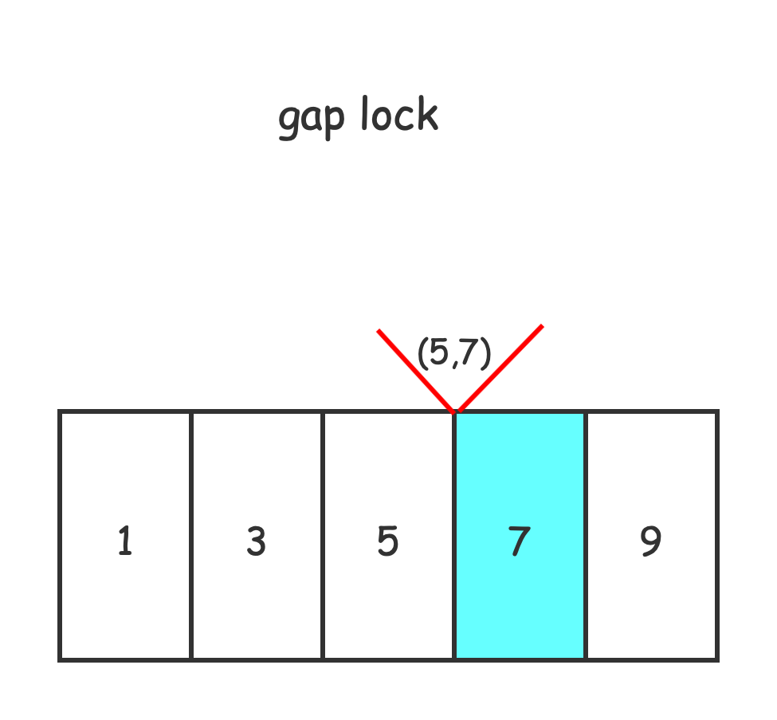
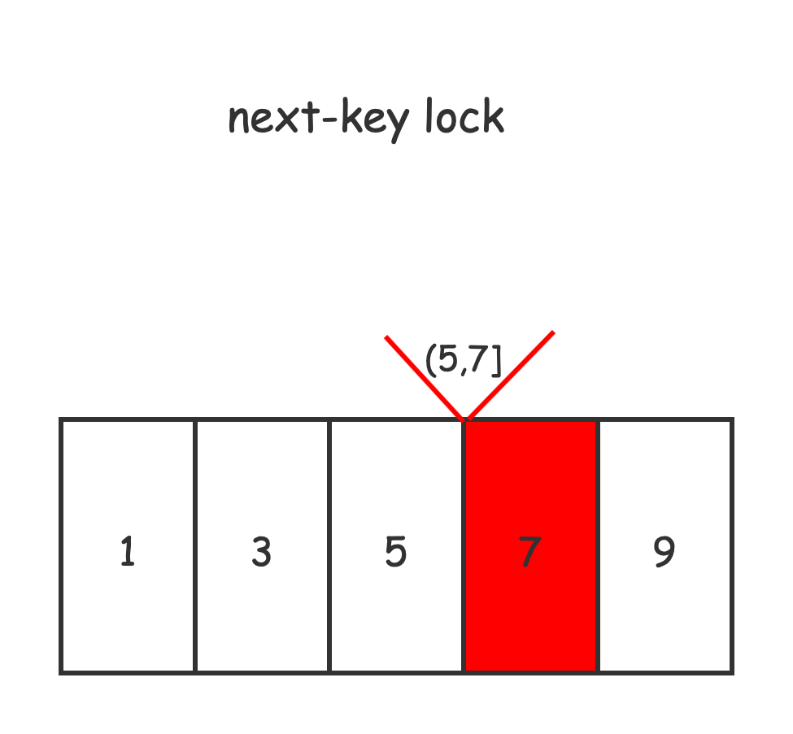
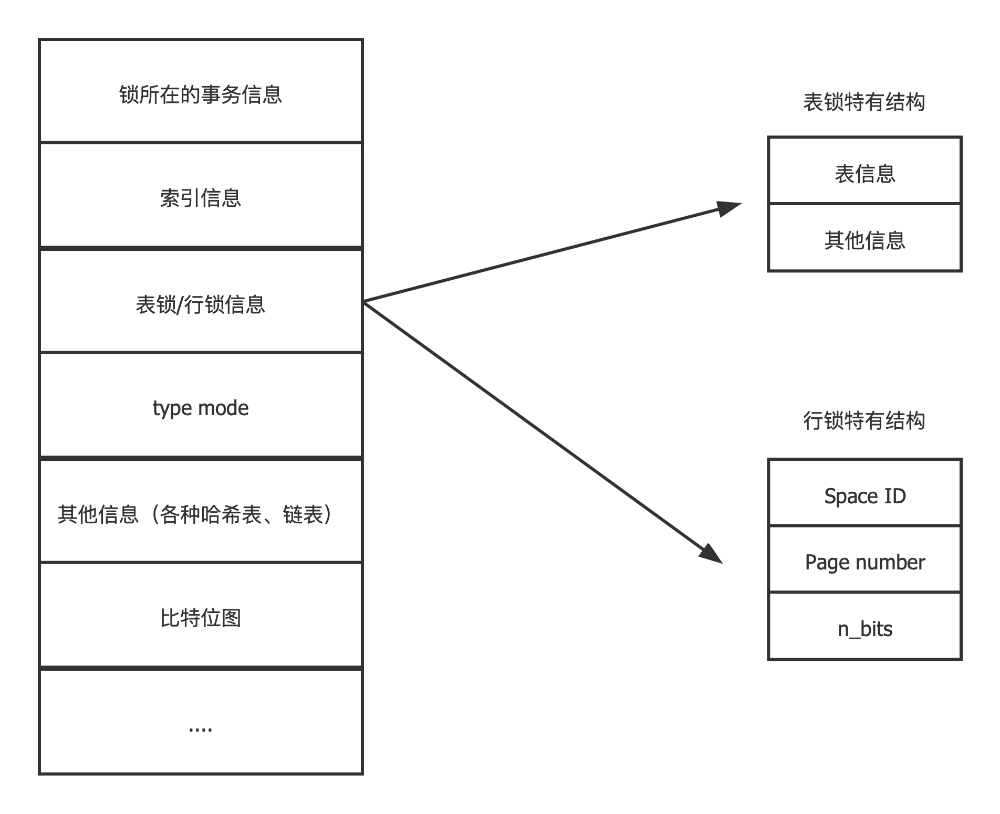

<!DOCTYPE html>


<html lang="zh-CN">


<head>
  <meta charset="utf-8" />
    
  <meta name="viewport" content="width=device-width, initial-scale=1, maximum-scale=1" />
  <title>
    MySQL系列 —— 锁机制 |  JsyBlog
  </title>
  <meta name="generator" content="hexo-theme-ayer">
  
  <link rel="shortcut icon" href="/images/ayer.png" />
  
  
<link rel="stylesheet" href="/dist/main.css">

  <link rel="stylesheet" href="https://cdn.jsdelivr.net/gh/Shen-Yu/cdn/css/remixicon.min.css">
  
<link rel="stylesheet" href="/css/custom.css">

  
  <script src="https://cdn.jsdelivr.net/npm/pace-js@1.0.2/pace.min.js"></script>
  
  

  

</head>

</html>

<body>
  <div id="app">
    
      
      <canvas width="1777" height="841"
        style="position: fixed; left: 0px; top: 0px; z-index: 99999; pointer-events: none;"></canvas>
      
    <main class="content on">
      <section class="outer">
  <article
  id="post-MySQL系列——-锁机制"
  class="article article-type-post"
  itemscope
  itemprop="blogPost"
  data-scroll-reveal
>
  <div class="article-inner">
    
    <header class="article-header">
       
<h1 class="article-title sea-center" style="border-left:0" itemprop="name">
  MySQL系列 —— 锁机制
</h1>
 

    </header>
     
    <div class="article-meta">
      <a href="/2021/11/03/MySQL%E7%B3%BB%E5%88%97%E2%80%94%E2%80%94-%E9%94%81%E6%9C%BA%E5%88%B6/" class="article-date">
  <time datetime="2021-11-03T08:11:15.000Z" itemprop="datePublished">2021-11-03</time>
</a> 
  <div class="article-category">
    <a class="article-category-link" href="/categories/MySQL/">MySQL</a>
  </div>
  
<div class="word_count">
    <span class="post-time">
        <span class="post-meta-item-icon">
            <i class="ri-quill-pen-line"></i>
            <span class="post-meta-item-text"> 字数统计:</span>
            <span class="post-count">3.5k</span>
        </span>
    </span>

    <span class="post-time">
        &nbsp; | &nbsp;
        <span class="post-meta-item-icon">
            <i class="ri-book-open-line"></i>
            <span class="post-meta-item-text"> 阅读时长≈</span>
            <span class="post-count">14 分钟</span>
        </span>
    </span>
</div>
 
    </div>
      
    <div class="tocbot"></div>


  
    <div class="article-entry" itemprop="articleBody">
       
  <h3 id="两阶段锁协议"><a href="#两阶段锁协议" class="headerlink" title="两阶段锁协议"></a>两阶段锁协议</h3><p>两阶段锁协议（2PL）是一种能够保证事务可串行化的协议，它将事务的获取锁和释放锁划分成了增长（Growing）和缩减（Shrinking）两个不同的阶段。</p>
<p>在增长阶段，一个事务可以获得锁但是不能释放锁；而在缩减阶段事务只可以释放锁，并不能获得新的锁，如果只看 2PL 的定义，那么到这里就已经介绍完了，但是它还有两个变种：</p>
<ol>
<li><strong>严格两阶段锁</strong>（Strict 2PL）：事务持有的<strong>互斥</strong>锁必须在提交后再释放；</li>
<li><strong>强两阶段锁</strong>（Rigorous 2PL）：事务持有的<strong>所有</strong>锁必须在提交后释放；</li>
</ol>
<h1 id="MySQL中锁机制"><a href="#MySQL中锁机制" class="headerlink" title="MySQL中锁机制"></a>MySQL中锁机制</h1><h2 id="按粒度分"><a href="#按粒度分" class="headerlink" title="按粒度分"></a>按粒度分</h2><p>表锁<br>行锁</p>
<p>简单的说，表锁上锁的粒度是table，而行锁可以只对部分行上锁。</p>
<p>后者粒度低得多，这也是为什么InnoDB引擎是默认的引擎，除非你的数据库操作只有读，没有写和加锁读。</p>
<p>否则表锁的代价太大。</p>
<p></p>
<h2 id="按是否意向锁区分"><a href="#按是否意向锁区分" class="headerlink" title="按是否意向锁区分"></a>按是否意向锁区分</h2><p>意向锁、非意向锁</p>
<p>（见上图）</p>
<p>虽然这种不同粒度的锁能够解决父节点被加锁时，子节点不能被加锁的问题，但是我们没有办法在子节点被加锁时，立刻确定父节点能不能被加锁。</p>
<p>在这时我们就需要引入<strong>意向锁</strong>来解决这个问题了。</p>
<p><strong>当需要给子节点加锁时，先给所有的父节点加对应的意向锁</strong>，<strong>意向锁之间是完全不会互斥的</strong>，只是用来帮助父节点快速判断是否可以对该节点进行加锁。</p>
<p>具体的，InnoDB如果需要对每一行加上行锁，那么需要先给它所在表加上意向锁。</p>
<p>加的是互斥行锁，就给表加上意向互斥锁（IX）；</p>
<p>加的是共享行锁，就给锁加上意向共享锁（IS）。</p>
<p>见下图，各种锁的兼容性矩阵。</p>
<p></p>
<h2 id="按读写性质分"><a href="#按读写性质分" class="headerlink" title="按读写性质分"></a>按读写性质分</h2><p>读锁（共享锁、S锁）<br>写锁（互斥锁、X锁）</p>
<p>这个锁的语义和其他地方（如Java中的<code>ReadWriteLock</code>）锁的意义是一致的。</p>
<p>读锁-读锁共享；读锁-写锁互斥；写锁-写锁互斥。</p>
<p>写操作加的都是写锁，普通读操作是不加锁的（这个读称之为MVCC的一致性非锁定读）。</p>
<p>如果需要读操作也要加锁，可以使用<code>for share</code>、<code>for update</code>）(前者也就是<code>lock in share mode </code>)。（后面会详细介绍）</p>
<blockquote>
<p> 注意MySQL支持多种存储引擎，不同引擎对锁的支持是不一样的。<br>比如，MyISAM、Memory引擎就不支持行锁，自然也无需表级别的意向锁。<br>重点是InnoDB中的锁机制。</p>
</blockquote>
<h1 id="InnoDB存储引擎中的锁"><a href="#InnoDB存储引擎中的锁" class="headerlink" title="InnoDB存储引擎中的锁"></a>InnoDB存储引擎中的锁</h1><h2 id="InnoDB中的表级锁"><a href="#InnoDB中的表级锁" class="headerlink" title="InnoDB中的表级锁"></a>InnoDB中的表级锁</h2><ul>
<li><strong>表级别的S锁、X锁</strong></li>
</ul>
<ol>
<li><p>默认情况在对一个表执行 select、insert、delete、update语句时, InnoDB引擎不会为这个表加上表级别的锁。</p>
</li>
<li><p>在执行一些DDL语句时，会和select、insert、delete、update产生冲突，一个阻塞另一个。</p>
<p>不过，这个不是表锁起的作用，而是位于服务器层的 <strong>元数据锁</strong>（Metadata Lock）来实现的。</p>
<p>（DDL语句执行时，<strong>会隐式提交当前会话中的事务</strong>，这个要注意)</p>
</li>
<li><p>InnoDB存储引擎提供的表锁其实在一般使用场景下，并不会直接使用到，只有在一些特殊场景下（服务崩溃需要对系统运维时使用）。</p>
</li>
</ol>
<p><strong>如何加表锁</strong></p>
<p>在系统变量为 <code>autocommit = 0</code>和<code>innodb_table_locks = 1</code>时，</p>
<figure class="highlight sql"><table><tr><td class="gutter"><pre><span class="line">1</span><br><span class="line">2</span><br></pre></td><td class="code"><pre><span class="line">LOCK TABLES t READ; # 表级别读锁</span><br><span class="line">LOCK TABLES T WRITE; # 表级别的写锁</span><br></pre></td></tr></table></figure>


<ul>
<li><p><strong>表级别的IS、IX锁</strong></p>
<p>在需要加行锁的时候，需要先给所在的表加上意向锁。加意向锁的作用和意图在上面已经说过了。</p>
</li>
</ul>
<ul>
<li><strong>表级别的AUTO-INC锁</strong></li>
</ul>
<p>如何实现对具有<strong>AUTO_INCREMENT</strong>属性的列的自增？</p>
<p>这个时候需要使用到表级别的<strong>自增锁</strong>。</p>
<p>注意这个AUTO-INC锁的作用范围只有单个插入语句，在插入语句完成后，这把锁就会被释放。</p>
<p>还有一个更轻量的实现，就是在获取到需要的自增值就立即释放锁，不必等待插入语句完成。</p>
<p>可以使用<code>innodb_autoinc_lock_mode</code>控制使用哪个实现。</p>
<h2 id="InnoDB中的行级锁"><a href="#InnoDB中的行级锁" class="headerlink" title="InnoDB中的行级锁"></a>InnoDB中的行级锁</h2><p>InnoDB中的行级锁有下面几种概念， 共同实现了行锁这个语义。</p>
<ul>
<li><p><strong>Record Lock</strong></p>
<p>记录锁，官方叫它“LOCK_REC_NOT_GAP”，顾名思义，锁住的是真实的数据行。</p>
</li>
<li><p><strong>Gap Lock</strong></p>
<p>间隙锁，”LOCK_GAP”</p>
<p>这个间隙锁，锁住的是数据记录之间的间隙。</p>
<p>为什么要锁住间隙？这个gap lock的提出是为了解决”幻行“现象的发生。</p>
<p>所谓幻读，就是一个事务向另一个事务读范围中插入了一条记录，然后另一个事务就读到了“幻行”（虽然说MVCC的一致性读很大程度上可以避免，但是彻底避免幻读就需要使用gap lock）。 </p>
</li>
</ul>


<p>如上图，再给7上间隙锁的时候，其他事务无法向(5,7)之间插入行记录。这就是<strong>锁住间隙</strong>的作用。</p>
<ul>
<li><strong>Next-key Lock</strong></li>
</ul>
<p>临键锁，官方叫它”LOCK_ORDINARY“,从这个英文名字就可以看出。</p>
<p>这个锁才是正常使用的加的行锁。</p>


<p>如上，临键锁实际上记录锁和间隙锁的合体。给某个记录加上临键锁，实际上锁住了这条记录和它前面的间隙。</p>
<p>所以说临键锁是”左开右闭“的。</p>
<h1 id="InnoDB锁的内存结构"><a href="#InnoDB锁的内存结构" class="headerlink" title="InnoDB锁的内存结构"></a>InnoDB锁的内存结构</h1><p>上面讲到了表锁和行锁。</p>
<p>表锁的对象的是一个表，可以为这张表生成一个锁结构。</p>
<p>如果是行锁呢？难不成为每一个数据行都要生成一个锁结构吧，这个对内存消耗太大了，也不利于管理。</p>
<p>所以，符合下面这些条件的记录的锁实际上使用一个锁结构就可以做到。</p>
<ul>
<li>同一个事务中</li>
<li>加锁的类型一样</li>
<li>等待状态一样</li>
<li>被加锁的记录在同一个页面中</li>
</ul>



<ul>
<li><p><strong>锁所在的事务信息</strong>：无论表级锁还是行级锁，都是属于一个事务的，这里记载着属于这个事务的信息。</p>
</li>
<li><p><strong>索引信息</strong>：对于行级锁而言，需要记录一下加锁的记录属于哪个索引。</p>
</li>
<li><p>表锁或者行锁信息：</p>
<p>如果是行锁的话：</p>
<ul>
<li>Space ID：记录所在表空间。</li>
<li>Page Number：记录所在的页号</li>
<li>n_bits：对弈行级锁而言，一条记录对应一个比特，实际上就是用一个位图结构去记录那些行记录被加了锁，n_bits则是表示使用了多少比特。</li>
</ul>
</li>
<li><p><strong>type mode</strong></p>
<ul>
<li><p><strong>lock_mode</strong>（锁模式）</p>
<ul>
<li>LOCK_IS（共享意向锁）</li>
<li>LOCK_IX（独占意向锁）</li>
<li>LOCK_S（共享锁）</li>
<li>LOCK_X（独占锁）</li>
<li>LOCK_AUTO_INC（AUTO_INC锁）</li>
</ul>
</li>
<li><p><strong>lock_type</strong>（锁类型）</p>
<ul>
<li>LOCK_TABLE（表级锁）</li>
<li>LOCK_REC （行级锁）</li>
</ul>
</li>
<li><p><strong>rec_lock_type</strong> （行锁的具体类型，只有当lock_type为LOCK_REC时才是有效的）</p>
<ul>
<li>LOCK_ORDINARY（next_key临键锁）</li>
<li>LOCK_GAP（间隙锁）</li>
<li>LOCK_REC_NOT_GAP（记录锁）</li>
<li>LOCK_INSERT_INTENTION（插入意向锁）</li>
</ul>
</li>
<li><p><strong>LOCK_WAITING</strong> </p>
<p>1 表示当前事务尚未得到锁，正处于等待状态，0 表示当前事务已经或得到锁。</p>
</li>
</ul>
</li>
</ul>
<p>其实仅仅看这个一个type mode 的结构皆可以知道MySQL锁的整体结构了。</p>
<p></p>
<ul>
<li>其他信息</li>
</ul>
<p>为了更好地管理系统运行过程中生成的锁结构，有哈希表、链表等等数据结构方便管理</p>
<ul>
<li><p>比特数组</p>
<p>n_bits属性指出这个位图有多大，那么这一堆比特位就是用来隐射这一页中有哪些记录加上了锁的。</p>
</li>
</ul>
<h1 id="查看事务的加锁情况"><a href="#查看事务的加锁情况" class="headerlink" title="查看事务的加锁情况"></a>查看事务的加锁情况</h1><p>也许需要打开一些配置项：</p>
<figure class="highlight sql"><table><tr><td class="gutter"><pre><span class="line">1</span><br><span class="line">2</span><br></pre></td><td class="code"><pre><span class="line"><span class="keyword">SET</span> <span class="keyword">GLOBAL</span> innodb_status_output<span class="operator">=</span><span class="keyword">ON</span>;</span><br><span class="line"><span class="keyword">SET</span> <span class="keyword">GLOBAL</span> innodb_status_output_locks<span class="operator">=</span><span class="keyword">ON</span>;</span><br></pre></td></tr></table></figure>

<p>在MySQL Clinet中使用<code>show engine innodb status</code></p>
<p>这里只列出关于事务和锁的信息，其余信息省略：</p>
<figure class="highlight shell"><table><tr><td class="gutter"><pre><span class="line">1</span><br><span class="line">2</span><br><span class="line">3</span><br><span class="line">4</span><br><span class="line">5</span><br><span class="line">6</span><br><span class="line">7</span><br><span class="line">8</span><br><span class="line">9</span><br><span class="line">10</span><br><span class="line">11</span><br><span class="line">12</span><br><span class="line">13</span><br><span class="line">14</span><br><span class="line">15</span><br><span class="line">16</span><br><span class="line">17</span><br><span class="line">18</span><br><span class="line">19</span><br><span class="line">20</span><br><span class="line">21</span><br><span class="line">22</span><br><span class="line">23</span><br><span class="line">24</span><br><span class="line">25</span><br><span class="line">26</span><br><span class="line">27</span><br><span class="line">28</span><br><span class="line">29</span><br><span class="line">30</span><br><span class="line">31</span><br><span class="line">32</span><br><span class="line">33</span><br><span class="line">34</span><br><span class="line">35</span><br><span class="line">36</span><br><span class="line">37</span><br><span class="line">38</span><br><span class="line">39</span><br><span class="line">40</span><br><span class="line">41</span><br><span class="line">42</span><br><span class="line">43</span><br><span class="line">44</span><br><span class="line">45</span><br><span class="line">46</span><br><span class="line">47</span><br><span class="line">48</span><br><span class="line">49</span><br><span class="line">50</span><br><span class="line">51</span><br><span class="line">52</span><br><span class="line">53</span><br><span class="line">54</span><br><span class="line">55</span><br><span class="line">56</span><br><span class="line">57</span><br><span class="line">58</span><br><span class="line">59</span><br><span class="line">60</span><br><span class="line">61</span><br><span class="line">62</span><br><span class="line">63</span><br><span class="line">64</span><br><span class="line">65</span><br><span class="line">66</span><br><span class="line">67</span><br><span class="line">68</span><br><span class="line">69</span><br><span class="line">70</span><br><span class="line">71</span><br><span class="line">72</span><br><span class="line">73</span><br><span class="line">74</span><br><span class="line">75</span><br><span class="line">76</span><br><span class="line">77</span><br><span class="line">78</span><br><span class="line">79</span><br><span class="line">80</span><br></pre></td><td class="code"><pre><span class="line"><span class="meta">#</span><span class="bash"> 当前活动的事务</span> </span><br><span class="line">TRANSACTIONS</span><br><span class="line">------------</span><br><span class="line"><span class="meta">#</span><span class="bash"> 下一个分配的事务ID信息</span></span><br><span class="line">Trx id counter 7203081</span><br><span class="line">Purge done for trx&#x27;s n:o &lt; 7203074 undo n:o &lt; 0 state: running but idle</span><br><span class="line"><span class="meta">#</span><span class="bash"> 每个回滚段中都有一个History链表，链表的长度为 57</span></span><br><span class="line">History list length 57</span><br><span class="line"></span><br><span class="line"><span class="meta">#</span><span class="bash"> 下面对于每一个会话列出它的事务信息</span></span><br><span class="line">LIST OF TRANSACTIONS FOR EACH SESSION:</span><br><span class="line"><span class="meta">#</span><span class="bash">  每一个<span class="string">&#x27;---TRANSACTION&#x27;</span> 后面跟着响应的事务的信息</span></span><br><span class="line">---TRANSACTION 422190990756560, not started</span><br><span class="line">0 lock struct(s), heap size 1136, 0 row lock(s)</span><br><span class="line"></span><br><span class="line"><span class="meta">#</span><span class="bash"> 事务ID7203080, 活跃了 163 秒</span></span><br><span class="line">---TRANSACTION 7203080, ACTIVE 163 sec</span><br><span class="line"><span class="meta">#</span><span class="bash"> 2个锁结构， 7个行锁（实际上只有6条记录）（这里的锁结构指的就是前面的锁的内存结构）</span></span><br><span class="line">2 lock struct(s), heap size 1136, 7 row lock(s)</span><br><span class="line"><span class="meta">#</span><span class="bash"> MySQL内部线程号、操作系统中的线程号等信息</span></span><br><span class="line">MySQL thread id 17, OS thread handle 13048123392, query id 389 localhost 127.0.0.1 root</span><br><span class="line"></span><br><span class="line"><span class="meta">#</span><span class="bash"> 锁结构1. 表级别的意向互斥锁</span></span><br><span class="line">TABLE LOCK table `test_lock`.`test_lock` trx id 7203080 lock mode IX</span><br><span class="line"><span class="meta">#</span><span class="bash"> 锁结构2. 记录锁（</span></span><br><span class="line"><span class="meta">#</span><span class="bash"> 详细解释：表空间号是106，页号是4，锁的位图大小为80，索引是PRIMARY聚簇索引，X型实际上是next-key-lock，（aka 临键锁）</span></span><br><span class="line">RECORD LOCKS space id 106 page no 4 n bits 80 index PRIMARY of table `test_lock`.`test_lock` trx id 7203080 lock_mode X</span><br><span class="line"><span class="meta">#</span><span class="bash"> 紧接着就是加锁记录的详细信息</span></span><br><span class="line">Record lock, heap no 1 PHYSICAL RECORD: n_fields 1; compact format; info bits 0</span><br><span class="line"> 0: len 8; hex 73757072656d756d; asc supremum;;</span><br><span class="line"></span><br><span class="line">Record lock, heap no 2 PHYSICAL RECORD: n_fields 6; compact format; info bits 0</span><br><span class="line"> 0: len 4; hex 80000000; asc     ;;</span><br><span class="line"> 1: len 6; hex 0000002e0502; asc    .  ;;</span><br><span class="line"> 2: len 7; hex 0100000164102a; asc     d *;;</span><br><span class="line"> 3: len 4; hex 80000000; asc     ;;</span><br><span class="line"> 4: len 4; hex 80000000; asc     ;;</span><br><span class="line"> 5: len 4; hex 80000000; asc     ;;</span><br><span class="line"></span><br><span class="line">Record lock, heap no 3 PHYSICAL RECORD: n_fields 6; compact format; info bits 0</span><br><span class="line"> 0: len 4; hex 8000000a; asc     ;;</span><br><span class="line"> 1: len 6; hex 0000002e0502; asc    .  ;;</span><br><span class="line"> 2: len 7; hex 01000001641060; asc     d `;;</span><br><span class="line"> 3: len 4; hex 8000000a; asc     ;;</span><br><span class="line"> 4: len 4; hex 8000000a; asc     ;;</span><br><span class="line"> 5: len 4; hex 8000000a; asc     ;;</span><br><span class="line"></span><br><span class="line">Record lock, heap no 4 PHYSICAL RECORD: n_fields 6; compact format; info bits 0</span><br><span class="line"> 0: len 4; hex 80000014; asc     ;;</span><br><span class="line"> 1: len 6; hex 0000002e0551; asc    . Q;;</span><br><span class="line"> 2: len 7; hex 010000012c112d; asc     , -;;</span><br><span class="line"> 3: len 4; hex 80000014; asc     ;;</span><br><span class="line"> 4: len 4; hex 80000014; asc     ;;</span><br><span class="line"> 5: len 4; hex 80000014; asc     ;;</span><br><span class="line"></span><br><span class="line">Record lock, heap no 5 PHYSICAL RECORD: n_fields 6; compact format; info bits 0</span><br><span class="line"> 0: len 4; hex 8000001e; asc     ;;</span><br><span class="line"> 1: len 6; hex 0000002e0502; asc    .  ;;</span><br><span class="line"> 2: len 7; hex 01000001641100; asc     d  ;;</span><br><span class="line"> 3: len 4; hex 8000001e; asc     ;;</span><br><span class="line"> 4: len 4; hex 8000001e; asc     ;;</span><br><span class="line"> 5: len 4; hex 8000001e; asc     ;;</span><br><span class="line"></span><br><span class="line">Record lock, heap no 6 PHYSICAL RECORD: n_fields 6; compact format; info bits 0</span><br><span class="line"> 0: len 4; hex 80000028; asc    (;;</span><br><span class="line"> 1: len 6; hex 0000002e13cd; asc    .  ;;</span><br><span class="line"> 2: len 7; hex 02000001591605; asc     Y  ;;</span><br><span class="line"> 3: len 4; hex 80000028; asc    (;;</span><br><span class="line"> 4: len 4; hex 80000028; asc    (;;</span><br><span class="line"> 5: len 4; hex 80000028; asc    (;;</span><br><span class="line"></span><br><span class="line">Record lock, heap no 7 PHYSICAL RECORD: n_fields 6; compact format; info bits 0</span><br><span class="line"> 0: len 4; hex 80000032; asc    2;;</span><br><span class="line"> 1: len 6; hex 0000002e0990; asc    .  ;;</span><br><span class="line"> 2: len 7; hex 020000013e14d7; asc     &gt;  ;;</span><br><span class="line"> 3: len 4; hex 80000032; asc    2;;</span><br><span class="line"> 4: len 4; hex 80000032; asc    2;;</span><br><span class="line"> 5: len 4; hex 80000032; asc    2;;</span><br><span class="line"></span><br><span class="line">--------</span><br></pre></td></tr></table></figure>


<h2 id="死锁"><a href="#死锁" class="headerlink" title="死锁"></a>死锁</h2><p>死锁示例sql：</p>
<p>事务1</p>
<figure class="highlight sql"><table><tr><td class="gutter"><pre><span class="line">1</span><br><span class="line">2</span><br><span class="line">3</span><br></pre></td><td class="code"><pre><span class="line"><span class="keyword">start</span> transaction ;</span><br><span class="line"><span class="keyword">select</span> <span class="operator">*</span> <span class="keyword">from</span> test_lock <span class="keyword">where</span> primary_id <span class="operator">=</span> <span class="number">10</span> <span class="keyword">for</span> update ;</span><br><span class="line"><span class="keyword">select</span> <span class="operator">*</span> <span class="keyword">from</span> test_lock <span class="keyword">where</span> primary_id <span class="operator">=</span> <span class="number">20</span> <span class="keyword">for</span> update ;</span><br></pre></td></tr></table></figure>

<p>事务2</p>
<figure class="highlight sql"><table><tr><td class="gutter"><pre><span class="line">1</span><br><span class="line">2</span><br><span class="line">3</span><br></pre></td><td class="code"><pre><span class="line"><span class="keyword">start</span> transaction ;</span><br><span class="line"><span class="keyword">select</span> <span class="operator">*</span> <span class="keyword">from</span> test_lock <span class="keyword">where</span> primary_id <span class="operator">=</span> <span class="number">20</span> <span class="keyword">for</span> update ;</span><br><span class="line"><span class="keyword">select</span> <span class="operator">*</span> <span class="keyword">from</span> test_lock <span class="keyword">where</span> primary_id <span class="operator">=</span> <span class="number">10</span> <span class="keyword">for</span> update ;</span><br></pre></td></tr></table></figure>


<p><strong>InnoDB的死锁检测机制</strong></p>
<p>当它检测到死锁发生时，会选择一个较小的事务（所谓较小的事务，就是在事务执行过程中插入、更新后删除的记录较少的事务）进行回滚（这个是自动完成的），并向客户端发送一条消息：<code>[40001][1213] Deadlock found when trying to get lock; try restarting transaction</code> .</p>
<blockquote>
<p>那么如何定位到死锁的发生的地方呢？</p>
</blockquote>
<p>仍然是使用<code>show engine innnodb status</code>来查看死锁信息：</p>
<figure class="highlight shell"><table><tr><td class="gutter"><pre><span class="line">1</span><br><span class="line">2</span><br><span class="line">3</span><br><span class="line">4</span><br><span class="line">5</span><br><span class="line">6</span><br><span class="line">7</span><br><span class="line">8</span><br><span class="line">9</span><br><span class="line">10</span><br><span class="line">11</span><br><span class="line">12</span><br><span class="line">13</span><br><span class="line">14</span><br><span class="line">15</span><br><span class="line">16</span><br><span class="line">17</span><br><span class="line">18</span><br><span class="line">19</span><br><span class="line">20</span><br><span class="line">21</span><br><span class="line">22</span><br><span class="line">23</span><br><span class="line">24</span><br><span class="line">25</span><br><span class="line">26</span><br><span class="line">27</span><br><span class="line">28</span><br><span class="line">29</span><br><span class="line">30</span><br><span class="line">31</span><br><span class="line">32</span><br><span class="line">33</span><br><span class="line">34</span><br><span class="line">35</span><br><span class="line">36</span><br><span class="line">37</span><br><span class="line">38</span><br><span class="line">39</span><br><span class="line">40</span><br><span class="line">41</span><br><span class="line">42</span><br><span class="line">43</span><br><span class="line">44</span><br><span class="line">45</span><br><span class="line">46</span><br><span class="line">47</span><br><span class="line">48</span><br><span class="line">49</span><br><span class="line">50</span><br><span class="line">51</span><br><span class="line">52</span><br><span class="line">53</span><br><span class="line">54</span><br><span class="line">55</span><br><span class="line">56</span><br><span class="line">57</span><br><span class="line">58</span><br><span class="line">59</span><br><span class="line">60</span><br></pre></td><td class="code"><pre><span class="line">------------------------</span><br><span class="line"><span class="meta">#</span><span class="bash"> 最近一次捕捉的死锁信息</span></span><br><span class="line">LATEST DETECTED DEADLOCK</span><br><span class="line">------------------------</span><br><span class="line"><span class="meta">#</span><span class="bash"> 死锁发生时间</span></span><br><span class="line">2021-11-27 11:49:06 0x309c3d000</span><br><span class="line"><span class="meta">#</span><span class="bash"> 死锁发生时的第一个事务信息</span></span><br><span class="line">*** (1) TRANSACTION:</span><br><span class="line">TRANSACTION 7203086, ACTIVE 12 sec starting index read</span><br><span class="line"><span class="meta">#</span><span class="bash"> 该事务使用了一个表，为一个表上了锁</span></span><br><span class="line">mysql tables in use 1, locked 1</span><br><span class="line"><span class="meta">#</span><span class="bash"> 拥有 3 个锁结构，2个行锁</span></span><br><span class="line">LOCK WAIT 3 lock struct(s), heap size 1136, 2 row lock(s)</span><br><span class="line"><span class="meta">#</span><span class="bash"> 线程信息</span></span><br><span class="line">MySQL thread id 24, OS thread handle 13048426496, query id 978 localhost 127.0.0.1 root statistics</span><br><span class="line"><span class="meta">#</span><span class="bash"> 发生锁时执行的SQL语句</span></span><br><span class="line">/* ApplicationName=DataGrip 2020.3.1 */ select * from test_lock where primary_id = 20 for update</span><br><span class="line"><span class="meta">#</span><span class="bash"> 当前线程正在等待获取的锁</span></span><br><span class="line">*** (1) WAITING FOR THIS LOCK TO BE GRANTED:</span><br><span class="line">RECORD LOCKS space id 106 page no 4 n bits 80 index PRIMARY of table `test_lock`.`test_lock` trx id 7203086 lock_mode X locks rec but not gap waiting</span><br><span class="line"><span class="meta">#</span><span class="bash"> 这条记录正对应着 select * from test_lock <span class="built_in">where</span> primary_id = 20 <span class="keyword">for</span> update ;</span></span><br><span class="line">Record lock, heap no 4 PHYSICAL RECORD: n_fields 6; compact format; info bits 0</span><br><span class="line"> 0: len 4; hex 80000014; asc     ;;</span><br><span class="line"> 1: len 6; hex 0000002e0551; asc    . Q;;</span><br><span class="line"> 2: len 7; hex 010000012c112d; asc     , -;;</span><br><span class="line"> 3: len 4; hex 80000014; asc     ;;</span><br><span class="line"> 4: len 4; hex 80000014; asc     ;;</span><br><span class="line"> 5: len 4; hex 80000014; asc     ;;</span><br><span class="line"></span><br><span class="line"><span class="meta">#</span><span class="bash"> 死锁发生时的第二个事务信息</span></span><br><span class="line">*** (2) TRANSACTION:</span><br><span class="line">TRANSACTION 7203087, ACTIVE 9 sec starting index read</span><br><span class="line">mysql tables in use 1, locked 1</span><br><span class="line">3 lock struct(s), heap size 1136, 2 row lock(s)</span><br><span class="line">MySQL thread id 25, OS thread handle 13048729600, query id 987 localhost 127.0.0.1 root statistics</span><br><span class="line">/* ApplicationName=DataGrip 2020.3.1 */ select * from test_lock where primary_id = 10 for update</span><br><span class="line"><span class="meta">#</span><span class="bash"> 此事务已经或得到的锁</span></span><br><span class="line">*** (2) HOLDS THE LOCK(S):</span><br><span class="line">RECORD LOCKS space id 106 page no 4 n bits 80 index PRIMARY of table `test_lock`.`test_lock` trx id 7203087 lock_mode X locks rec but not gap</span><br><span class="line"><span class="meta">#</span><span class="bash"> 这条记录正对应着 select * from test_lock <span class="built_in">where</span> primary_id = 20 <span class="keyword">for</span> update ;</span></span><br><span class="line">Record lock, heap no 4 PHYSICAL RECORD: n_fields 6; compact format; info bits 0</span><br><span class="line"> 0: len 4; hex 80000014; asc     ;;</span><br><span class="line"> 1: len 6; hex 0000002e0551; asc    . Q;;</span><br><span class="line"> 2: len 7; hex 010000012c112d; asc     , -;;</span><br><span class="line"> 3: len 4; hex 80000014; asc     ;;</span><br><span class="line"> 4: len 4; hex 80000014; asc     ;;</span><br><span class="line"> 5: len 4; hex 80000014; asc     ;;</span><br><span class="line"><span class="meta">#</span><span class="bash"> 此事务等待的锁</span></span><br><span class="line">*** (2) WAITING FOR THIS LOCK TO BE GRANTED:</span><br><span class="line">RECORD LOCKS space id 106 page no 4 n bits 80 index PRIMARY of table `test_lock`.`test_lock` trx id 7203087 lock_mode X locks rec but not gap waiting</span><br><span class="line">Record lock, heap no 3 PHYSICAL RECORD: n_fields 6; compact format; info bits 0</span><br><span class="line"> 0: len 4; hex 8000000a; asc     ;;</span><br><span class="line"> 1: len 6; hex 0000002e0502; asc    .  ;;</span><br><span class="line"> 2: len 7; hex 01000001641060; asc     d `;;</span><br><span class="line"> 3: len 4; hex 8000000a; asc     ;;</span><br><span class="line"> 4: len 4; hex 8000000a; asc     ;;</span><br><span class="line"> 5: len 4; hex 8000000a; asc     ;;</span><br><span class="line"></span><br><span class="line"><span class="meta">#</span><span class="bash"> InnoDB决定回滚第二个事务</span></span><br><span class="line">*** WE ROLL BACK TRANSACTION (2)</span><br></pre></td></tr></table></figure>


<p>不过注意，默认只记录最近一次死锁信息，可以将全局变量<code>innodb_print_all_deadlocks</code>设置为ON，这样的话</p>
<p>死锁发生的信息就会都记录在MySQL的错误日志中，然后就可以通过查看错误日志来分析更多的日志情况了。</p>
<p>于是，根据死锁发生的死锁日志来逆向定位产生的死锁的语句，然后再优化我们的业务。</p>
<h1 id="参考资料"><a href="#参考资料" class="headerlink" title="参考资料"></a>参考资料</h1><blockquote>
<p><a target="_blank" rel="noopener" href="https://draveness.me/database-concurrency-control/">浅谈数据库并发控制 - 锁和 MVCC</a></p>
</blockquote>
 
      <!-- reward -->
      
    </div>
    

    <!-- copyright -->
    
    <div class="declare">
      <ul class="post-copyright">
        <li>
          <i class="ri-copyright-line"></i>
          <strong>版权声明： </strong>
          
          本博客所有文章除特别声明外，著作权归作者所有。转载请注明出处！
          
        </li>
      </ul>
    </div>
    
    <footer class="article-footer">
       
<div class="share-btn">
      <span class="share-sns share-outer">
        <i class="ri-share-forward-line"></i>
        分享
      </span>
      <div class="share-wrap">
        <i class="arrow"></i>
        <div class="share-icons">
          
          <a class="weibo share-sns" href="javascript:;" data-type="weibo">
            <i class="ri-weibo-fill"></i>
          </a>
          <a class="weixin share-sns wxFab" href="javascript:;" data-type="weixin">
            <i class="ri-wechat-fill"></i>
          </a>
          <a class="qq share-sns" href="javascript:;" data-type="qq">
            <i class="ri-qq-fill"></i>
          </a>
          <a class="douban share-sns" href="javascript:;" data-type="douban">
            <i class="ri-douban-line"></i>
          </a>
          <!-- <a class="qzone share-sns" href="javascript:;" data-type="qzone">
            <i class="icon icon-qzone"></i>
          </a> -->
          
          <a class="facebook share-sns" href="javascript:;" data-type="facebook">
            <i class="ri-facebook-circle-fill"></i>
          </a>
          <a class="twitter share-sns" href="javascript:;" data-type="twitter">
            <i class="ri-twitter-fill"></i>
          </a>
          <a class="google share-sns" href="javascript:;" data-type="google">
            <i class="ri-google-fill"></i>
          </a>
        </div>
      </div>
</div>

<div class="wx-share-modal">
    <a class="modal-close" href="javascript:;"><i class="ri-close-circle-line"></i></a>
    <p>扫一扫，分享到微信</p>
    <div class="wx-qrcode">
      
    </div>
</div>

<div id="share-mask"></div>  
  <ul class="article-tag-list" itemprop="keywords"><li class="article-tag-list-item"><a class="article-tag-list-link" href="/tags/MySQL/" rel="tag">MySQL</a></li><li class="article-tag-list-item"><a class="article-tag-list-link" href="/tags/%E9%94%81/" rel="tag">锁</a></li></ul>

    </footer>
  </div>

   
  <nav class="article-nav">
    
      <a href="/2021/11/10/%E8%83%8C%E5%8C%85%E9%97%AE%E9%A2%98%E8%AF%A6%E8%A7%A3/" class="article-nav-link">
        <strong class="article-nav-caption">上一篇</strong>
        <div class="article-nav-title">
          
            背包问题详解
          
        </div>
      </a>
    
    
      <a href="/2021/11/03/%E5%B8%B8%E8%A7%81%E6%8E%92%E5%BA%8F%E7%AE%97%E6%B3%95%E7%AC%94%E8%AE%B0%EF%BC%88%E6%8F%92%E5%85%A5%E6%8E%92%E5%BA%8F%E3%80%81%E5%B8%8C%E5%B0%94%E6%8E%92%E5%BA%8F%E3%80%81%E5%BD%92%E5%B9%B6%E6%8E%92%E5%BA%8F%E3%80%81%E5%BF%AB%E9%80%9F%E6%8E%92%E5%BA%8F%E3%80%81%E5%A0%86%E6%8E%92%E5%BA%8F%E3%80%81%E8%AE%A1%E6%95%B0%E6%8E%92%E5%BA%8F%E3%80%81%E5%9F%BA%E6%95%B0%E6%8E%92%E5%BA%8F%EF%BC%89/" class="article-nav-link">
        <strong class="article-nav-caption">下一篇</strong>
        <div class="article-nav-title">常见排序算法笔记（插入排序、希尔排序、归并排序、快速排序、堆排序、计数排序、基数排序）</div>
      </a>
    
  </nav>

  
   
     
</article>

</section>
      <footer class="footer">
  <div class="outer">
    <ul>
      <li>
        Copyrights &copy;
        2020-2023
        <i class="ri-heart-fill heart_icon"></i> SongyangJi
      </li>
    </ul>
    <ul>
      <li>
        
      </li>
    </ul>
    <ul>
      <li>
        
      </li>
    </ul>
    <ul>
      
    </ul>
    <ul>
      
    </ul>
    <ul>
      <li>
        <!-- cnzz统计 -->
        
        <script type="text/javascript" src=''></script>
        
      </li>
    </ul>
  </div>
</footer>
      <div class="float_btns">
        <div class="totop" id="totop">
  <i class="ri-arrow-up-line"></i>
</div>

<div class="todark" id="todark">
  <i class="ri-moon-line"></i>
</div>

      </div>
    </main>
    <aside class="sidebar on">
      <button class="navbar-toggle"></button>
<nav class="navbar">
  
  <div class="logo">
    <a href="/"></a>
  </div>
  
  <ul class="nav nav-main">
    
    <li class="nav-item">
      <a class="nav-item-link" href="/">主页</a>
    </li>
    
    <li class="nav-item">
      <a class="nav-item-link" href="/archives">归档</a>
    </li>
    
    <li class="nav-item">
      <a class="nav-item-link" href="/categories">分类</a>
    </li>
    
    <li class="nav-item">
      <a class="nav-item-link" href="/tags">标签</a>
    </li>
    
  </ul>
</nav>
<nav class="navbar navbar-bottom">
  <ul class="nav">
    <li class="nav-item">
      
      <a class="nav-item-link nav-item-search"  title="搜索">
        <i class="ri-search-line"></i>
      </a>
      
      
    </li>
  </ul>
</nav>
<div class="search-form-wrap">
  <div class="local-search local-search-plugin">
  <input type="search" id="local-search-input" class="local-search-input" placeholder="Search...">
  <div id="local-search-result" class="local-search-result"></div>
</div>
</div>
    </aside>
    <script>
      if (window.matchMedia("(max-width: 768px)").matches) {
        document.querySelector('.content').classList.remove('on');
        document.querySelector('.sidebar').classList.remove('on');
      }
    </script>
    <div id="mask"></div>

<!-- #reward -->
<div id="reward">
  <span class="close"><i class="ri-close-line"></i></span>
  <p class="reward-p"><i class="ri-cup-line"></i>请我喝杯咖啡吧~</p>
  <div class="reward-box">
    
    
  </div>
</div>
    
<script src="/js/jquery-2.0.3.min.js"></script>


<script src="/js/lazyload.min.js"></script>

<!-- Tocbot -->


<script src="/js/tocbot.min.js"></script>

<script>
  tocbot.init({
    tocSelector: '.tocbot',
    contentSelector: '.article-entry',
    headingSelector: 'h1, h2, h3, h4, h5, h6',
    hasInnerContainers: true,
    scrollSmooth: true,
    scrollContainer: 'main',
    positionFixedSelector: '.tocbot',
    positionFixedClass: 'is-position-fixed',
    fixedSidebarOffset: 'auto'
  });
</script>

<script src="https://cdn.jsdelivr.net/npm/jquery-modal@0.9.2/jquery.modal.min.js"></script>
<link rel="stylesheet" href="https://cdn.jsdelivr.net/npm/jquery-modal@0.9.2/jquery.modal.min.css">
<script src="https://cdn.jsdelivr.net/npm/justifiedGallery@3.7.0/dist/js/jquery.justifiedGallery.min.js"></script>

<script src="/dist/main.js"></script>

<!-- ImageViewer -->

<!-- Root element of PhotoSwipe. Must have class pswp. -->
<div class="pswp" tabindex="-1" role="dialog" aria-hidden="true">

    <!-- Background of PhotoSwipe. 
         It's a separate element as animating opacity is faster than rgba(). -->
    <div class="pswp__bg"></div>

    <!-- Slides wrapper with overflow:hidden. -->
    <div class="pswp__scroll-wrap">

        <!-- Container that holds slides. 
            PhotoSwipe keeps only 3 of them in the DOM to save memory.
            Don't modify these 3 pswp__item elements, data is added later on. -->
        <div class="pswp__container">
            <div class="pswp__item"></div>
            <div class="pswp__item"></div>
            <div class="pswp__item"></div>
        </div>

        <!-- Default (PhotoSwipeUI_Default) interface on top of sliding area. Can be changed. -->
        <div class="pswp__ui pswp__ui--hidden">

            <div class="pswp__top-bar">

                <!--  Controls are self-explanatory. Order can be changed. -->

                <div class="pswp__counter"></div>

                <button class="pswp__button pswp__button--close" title="Close (Esc)"></button>

                <button class="pswp__button pswp__button--share" style="display:none" title="Share"></button>

                <button class="pswp__button pswp__button--fs" title="Toggle fullscreen"></button>

                <button class="pswp__button pswp__button--zoom" title="Zoom in/out"></button>

                <!-- Preloader demo http://codepen.io/dimsemenov/pen/yyBWoR -->
                <!-- element will get class pswp__preloader--active when preloader is running -->
                <div class="pswp__preloader">
                    <div class="pswp__preloader__icn">
                        <div class="pswp__preloader__cut">
                            <div class="pswp__preloader__donut"></div>
                        </div>
                    </div>
                </div>
            </div>

            <div class="pswp__share-modal pswp__share-modal--hidden pswp__single-tap">
                <div class="pswp__share-tooltip"></div>
            </div>

            <button class="pswp__button pswp__button--arrow--left" title="Previous (arrow left)">
            </button>

            <button class="pswp__button pswp__button--arrow--right" title="Next (arrow right)">
            </button>

            <div class="pswp__caption">
                <div class="pswp__caption__center"></div>
            </div>

        </div>

    </div>

</div>

<link rel="stylesheet" href="https://cdn.jsdelivr.net/npm/photoswipe@4.1.3/dist/photoswipe.min.css">
<link rel="stylesheet" href="https://cdn.jsdelivr.net/npm/photoswipe@4.1.3/dist/default-skin/default-skin.min.css">
<script src="https://cdn.jsdelivr.net/npm/photoswipe@4.1.3/dist/photoswipe.min.js"></script>
<script src="https://cdn.jsdelivr.net/npm/photoswipe@4.1.3/dist/photoswipe-ui-default.min.js"></script>

<script>
    function viewer_init() {
        let pswpElement = document.querySelectorAll('.pswp')[0];
        let $imgArr = document.querySelectorAll(('.article-entry img:not(.reward-img)'))

        $imgArr.forEach(($em, i) => {
            $em.onclick = () => {
                // slider展开状态
                // todo: 这样不好，后面改成状态
                if (document.querySelector('.left-col.show')) return
                let items = []
                $imgArr.forEach(($em2, i2) => {
                    let img = $em2.getAttribute('data-idx', i2)
                    let src = $em2.getAttribute('data-target') || $em2.getAttribute('src')
                    let title = $em2.getAttribute('alt')
                    // 获得原图尺寸
                    const image = new Image()
                    image.src = src
                    items.push({
                        src: src,
                        w: image.width || $em2.width,
                        h: image.height || $em2.height,
                        title: title
                    })
                })
                var gallery = new PhotoSwipe(pswpElement, PhotoSwipeUI_Default, items, {
                    index: parseInt(i)
                });
                gallery.init()
            }
        })
    }
    viewer_init()
</script>

<!-- MathJax -->

<script type="text/x-mathjax-config">
  MathJax.Hub.Config({
      tex2jax: {
          inlineMath: [ ['$','$'], ["\\(","\\)"]  ],
          processEscapes: true,
          skipTags: ['script', 'noscript', 'style', 'textarea', 'pre', 'code']
      }
  });

  MathJax.Hub.Queue(function() {
      var all = MathJax.Hub.getAllJax(), i;
      for(i=0; i < all.length; i += 1) {
          all[i].SourceElement().parentNode.className += ' has-jax';
      }
  });
</script>

<script src="https://cdn.jsdelivr.net/npm/mathjax@2.7.6/unpacked/MathJax.js?config=TeX-AMS-MML_HTMLorMML"></script>
<script>
  var ayerConfig = {
    mathjax: true
  }
</script>

<!-- Katex -->


    
        <link rel="stylesheet" href="https://cdn.jsdelivr.net/npm/katex@0.11.1/dist/katex.min.css">
        <script src="https://cdn.jsdelivr.net/npm/katex@0.11.1/dist/katex.min.js"></script>
        <script src="https://cdn.jsdelivr.net/npm/katex@0.11.1/dist/contrib/auto-render.min.js"></script>
        
            <script src="https://cdn.jsdelivr.net/npm/katex@0.11.1/dist/contrib/copy-tex.min.js"></script>
            <link rel="stylesheet" href="https://cdn.jsdelivr.net/npm/katex@0.11.1/dist/contrib/copy-tex.min.css">
        
    


<!-- busuanzi  -->

<!-- ClickLove -->

<!-- ClickBoom1 -->

<!-- ClickBoom2 -->


<script src="/js/clickBoom2.js"></script>


<!-- CodeCopy -->


<link rel="stylesheet" href="/css/clipboard.css">

<script src="https://cdn.jsdelivr.net/npm/clipboard@2/dist/clipboard.min.js"></script>
<script>
  function wait(callback, seconds) {
    var timelag = null;
    timelag = window.setTimeout(callback, seconds);
  }
  !function (e, t, a) {
    var initCopyCode = function(){
      var copyHtml = '';
      copyHtml += '<button class="btn-copy" data-clipboard-snippet="">';
      copyHtml += '<i class="ri-file-copy-2-line"></i><span>COPY</span>';
      copyHtml += '</button>';
      $(".highlight .code pre").before(copyHtml);
      $(".article pre code").before(copyHtml);
      var clipboard = new ClipboardJS('.btn-copy', {
        target: function(trigger) {
          return trigger.nextElementSibling;
        }
      });
      clipboard.on('success', function(e) {
        let $btn = $(e.trigger);
        $btn.addClass('copied');
        let $icon = $($btn.find('i'));
        $icon.removeClass('ri-file-copy-2-line');
        $icon.addClass('ri-checkbox-circle-line');
        let $span = $($btn.find('span'));
        $span[0].innerText = 'COPIED';
        
        wait(function () { // 等待两秒钟后恢复
          $icon.removeClass('ri-checkbox-circle-line');
          $icon.addClass('ri-file-copy-2-line');
          $span[0].innerText = 'COPY';
        }, 2000);
      });
      clipboard.on('error', function(e) {
        e.clearSelection();
        let $btn = $(e.trigger);
        $btn.addClass('copy-failed');
        let $icon = $($btn.find('i'));
        $icon.removeClass('ri-file-copy-2-line');
        $icon.addClass('ri-time-line');
        let $span = $($btn.find('span'));
        $span[0].innerText = 'COPY FAILED';
        
        wait(function () { // 等待两秒钟后恢复
          $icon.removeClass('ri-time-line');
          $icon.addClass('ri-file-copy-2-line');
          $span[0].innerText = 'COPY';
        }, 2000);
      });
    }
    initCopyCode();
  }(window, document);
</script>


<!-- CanvasBackground -->


<script src="/js/dz.js"></script>


    
  </div>
</body>

</html>